Video your agent can measure
Cuts, easing, colour and beats from any video, to the frame.
npx -y framelens init
Free, local and MIT. Works in Claude Code, Codex, Cursor and any MCP client.

- Time
- 26.50 s, frame 663
- Shot
- 17 of 20, 0.72 s
- Change
- move, ease-in, 15 frames, cubic-bezier(0.7, 0, 0.84, 0)
- Palette
- #F9E2D6
A description says “quick”. Frame Lens says 23 frames.
Described in words
A quick, smooth move.
- Starts
- 26.04 s
- Ends
- 26.96 s
- Length
- 23 frames at 25 fps
- Curve
- cubic-bezier(0.7, 0, 0.84, 0)
Every number says how it was obtained: measured, derived or inferred.
A podcast gets one sheet, a promo gets every frame
“Use this as a reference for my product promo.”
boundariesevery cut, ten samples a secondframesone sheet of the whole pieceframesevery frame around each movestyleshots, palette, moves and curvesexporta starter project, thencompare
“Turn this tutorial into a step-by-step guide.”
transcriptevery word with its timeboundarieseach screen changeframesone frame per screen, with the words said there
“Summarize this three-hour podcast.”
transcriptthe words carry the contentframesone overview sheet, nothing more
“Where does he set up DNS?”
transcriptfind the phraseframesaround the moment it is said
“What is the sound design here?”
audioloudness, hits, tempo, beat grid, spectrogramboundariescuts, to check which land on the beat
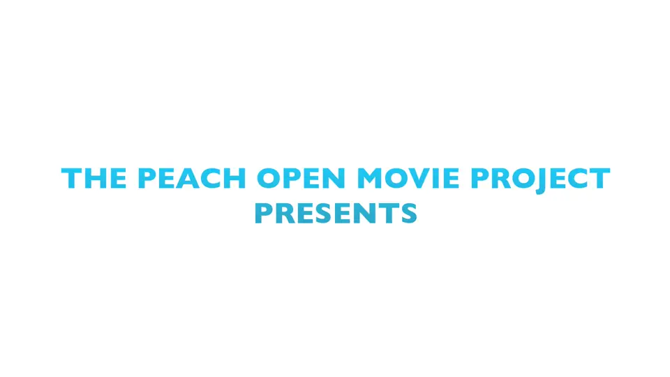
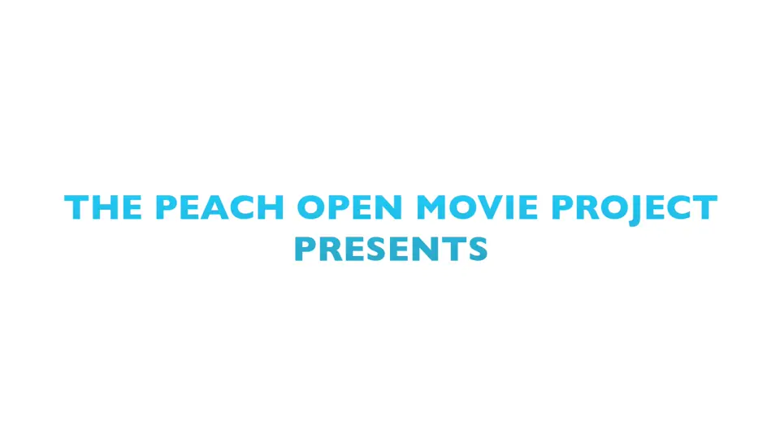
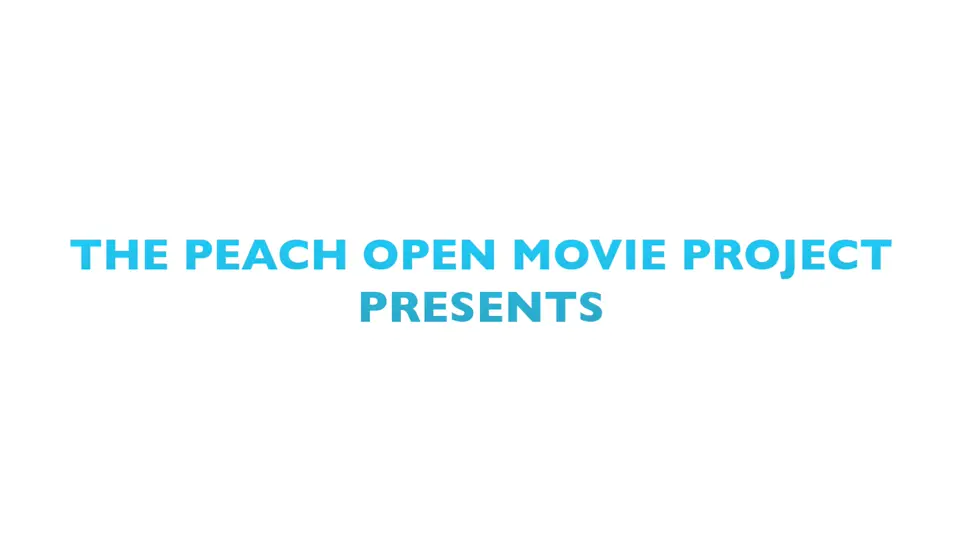
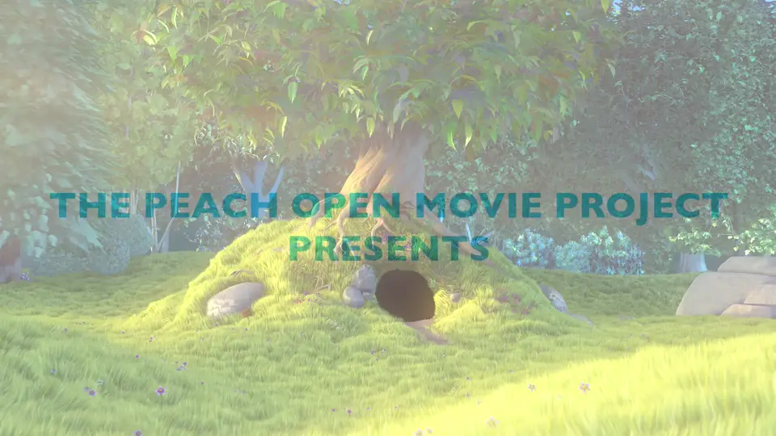
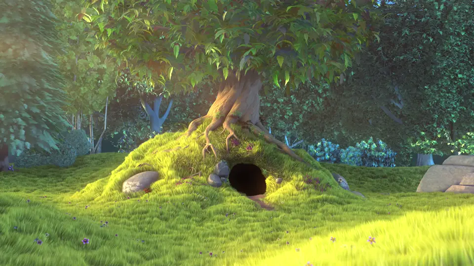
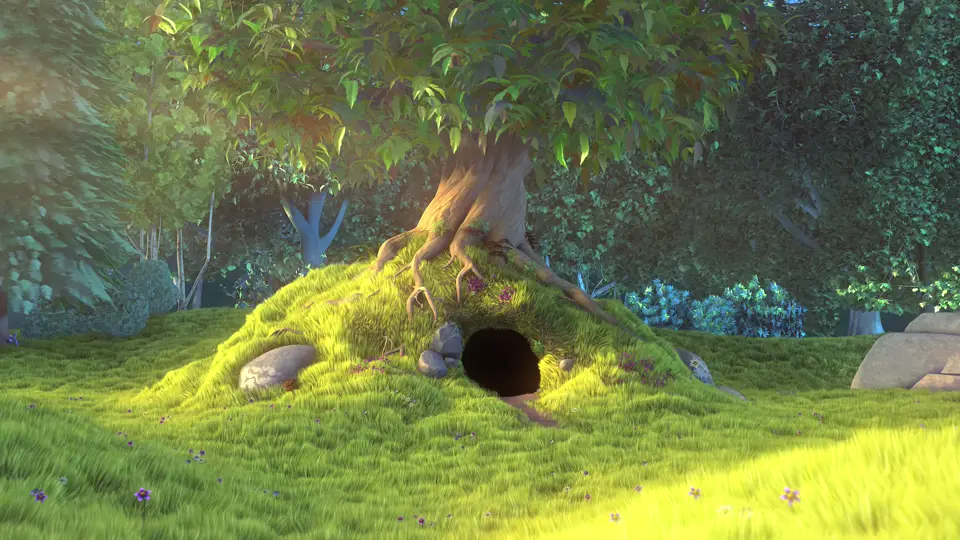
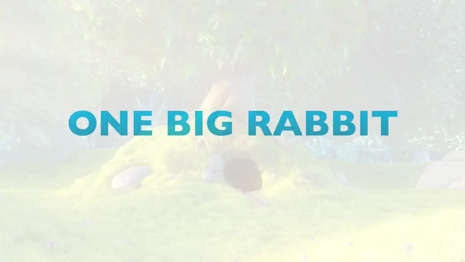
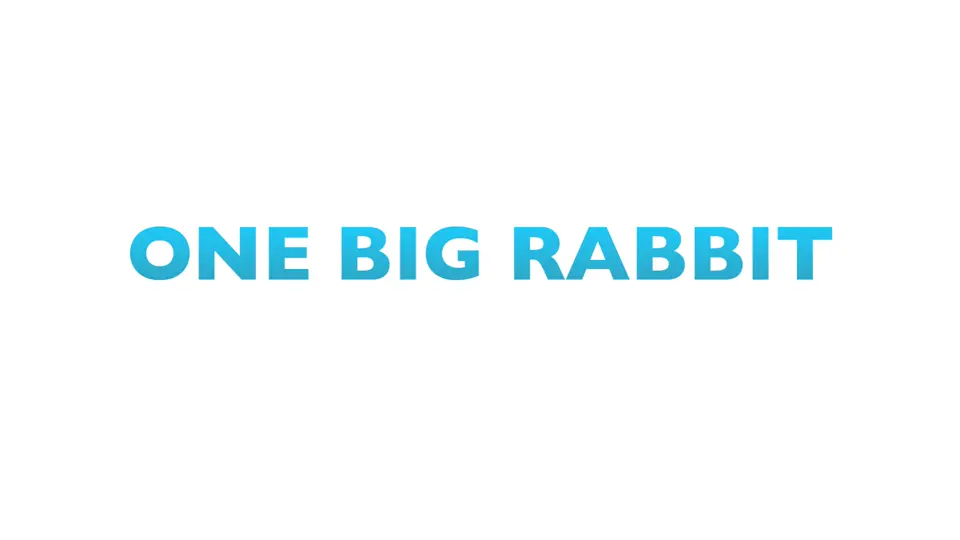


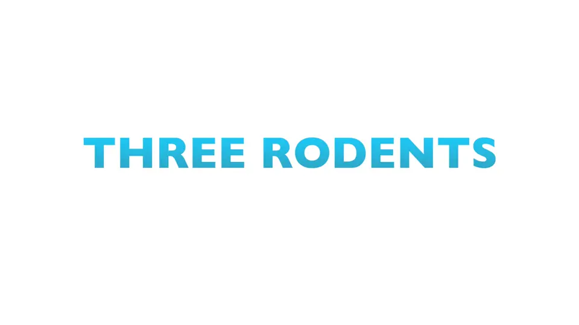
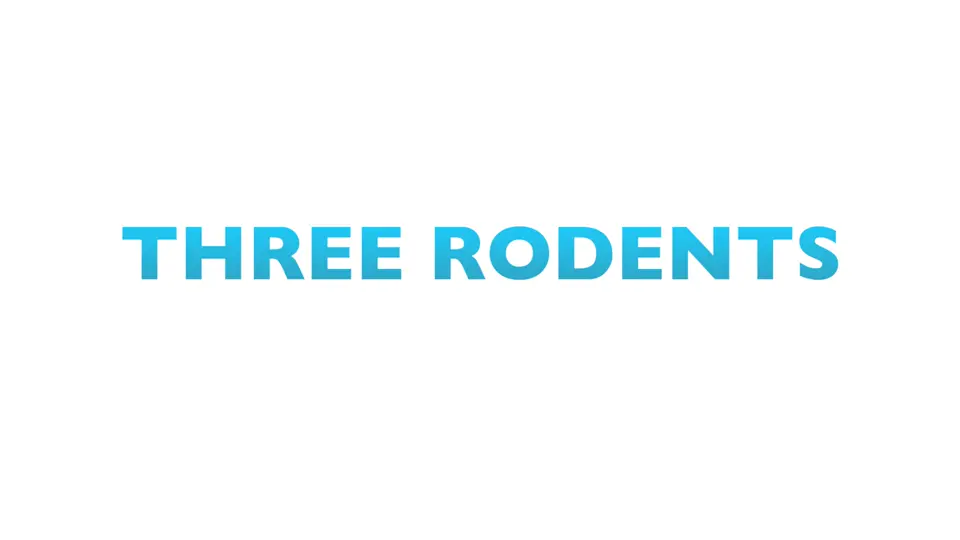
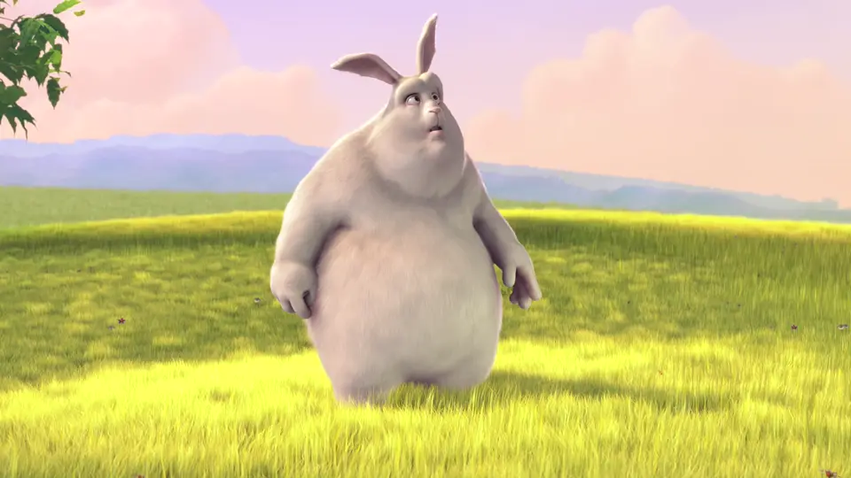

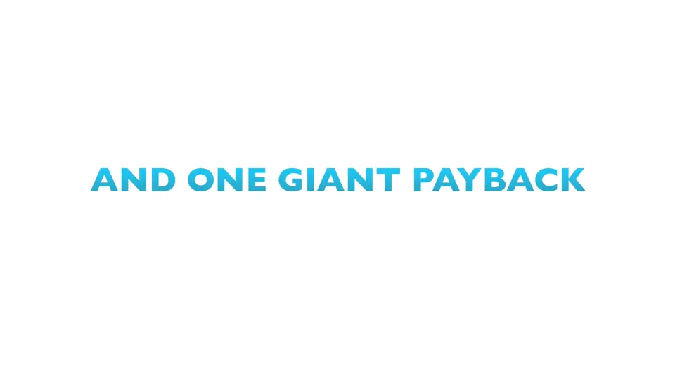
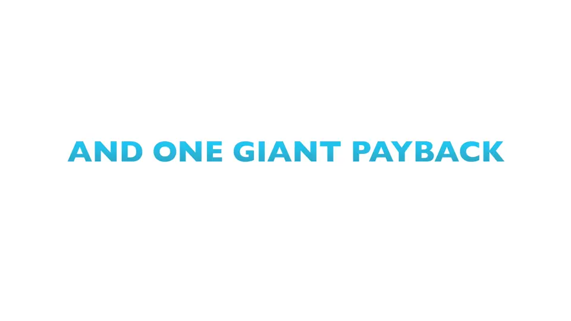

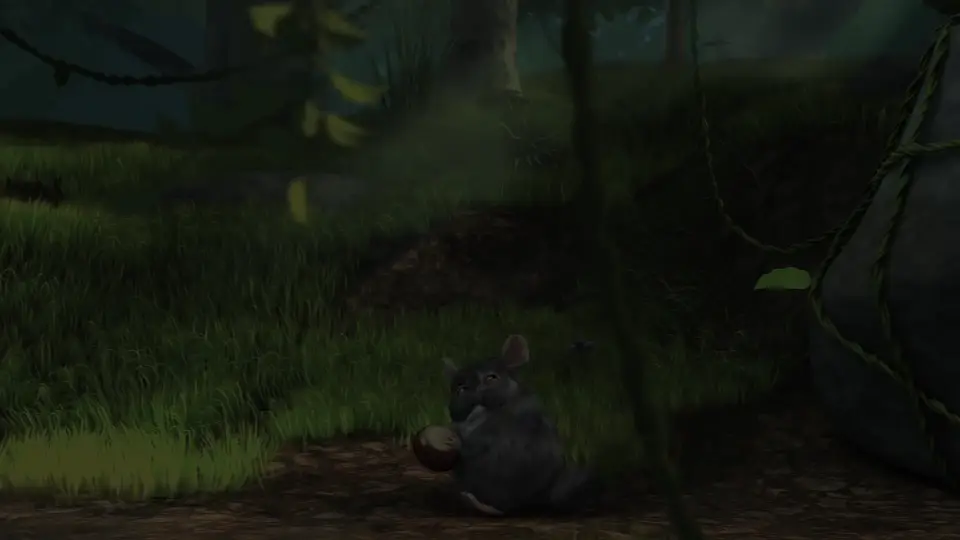

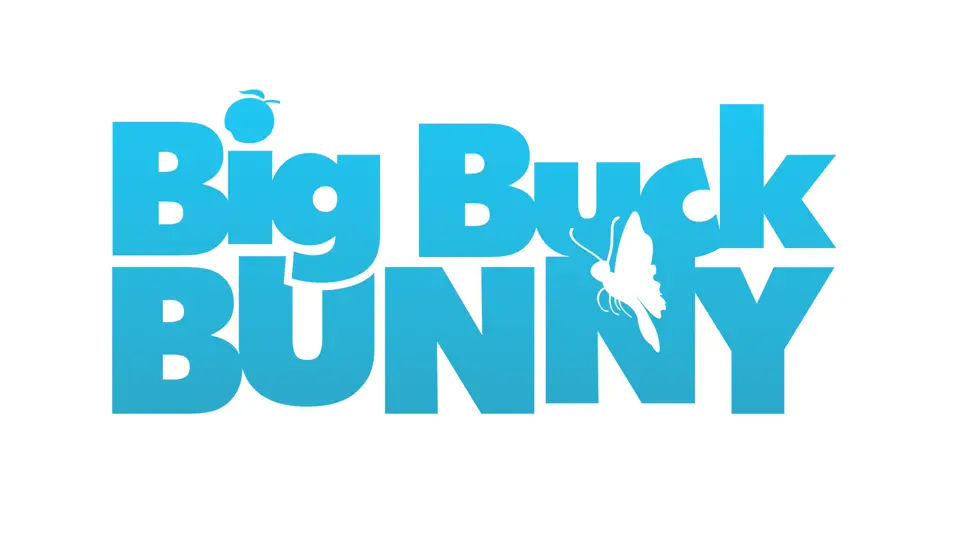
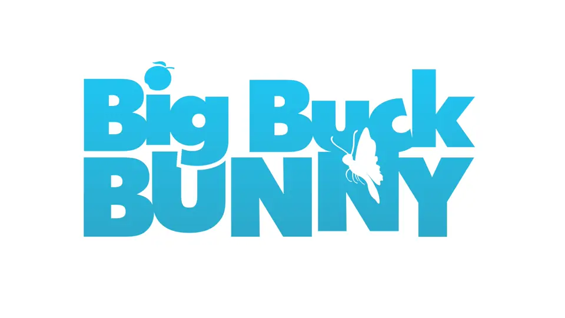

Video is measured; Lottie, Rive and websites are read exactly
| Source | How | What Frame Lens read |
|---|---|---|
| The trailer above, a video file | From pixels | 20 shots, 11 cuts, 8 fades and dissolves |
| A live website, makkov-harness | From the browser | 328 animations, mostly 500 ms on cubic-bezier(0.16, 1, 0.3, 1) |
| A Lottie file, our export read back | From keyframes | y 600 to 540 in 23 frames, cubic-bezier(0.7, 0, 0.84, 0) |
| Rive files and Figma prototypes | From the file | Keyframes and transitions |
| YouTube and most video sites | From pixels | Through a pinned yt-dlp |
The same 0.92-second move in five renderers
The move at 26.04 s, written for five renderers. Render yours, then compare names what drifted.
/* motion.css */
#shot-10 { background: #FCFDFD;
animation: fl-show 3.96s linear 26s; }
#shot-10 h1 { color: #2CA2CF;
animation: fl-enter 0.92s
cubic-bezier(0.7, 0, 0.84, 0) 26.04s both; }// src/timing.ts
{ id: "shot-10", from: 650,
durationInFrames: 99,
background: "#FCFDFD", accent: "#2CA2CF",
enterAt: 1, enterFrames: 23,
bezier: [0.7, 0, 0.84, 0] }<!-- compositions/shot-10.html -->
tl.fromTo("#shot-10-title",
{ opacity: 0, y: 60 },
{ opacity: 1, y: 0, duration: 0.92,
ease: "power3.in" }, 0.04);// framelens-reference.jsx
"keyStart": 26.04, "keyEnd": 26.96,
"bezier": [0.7, 0, 0.84, 0],
"positionEase": { "outSpeed": 0,
"outInfluence": 70,
"inSpeed": 407.6087, "inInfluence": 16 }// reference.json, frame 651 to 674
"o": { "a": 1, "k": [
{ "t": 651, "s": [0],
"o": { "x": [0.7], "y": [0] },
"i": { "x": [0.84], "y": [0] } },
{ "t": 674, "s": [100] } ] }Tested at 24, 30 and 60 fps against known answers
- 33/33
- cuts found on the exact frame
- 36/36
- easing families named right
- 1.00
- frame, the mean error on where a move starts
Synthetic clips with known cuts and curves. Read the benchmark.
Point it at a video tonight
Star on GitHubNode 20 and ffmpeg on your computer. framelens doctor --prepare checks the rest.
-
This project
npx -y framelens initAdds
.mcp.jsonand the agent skill here. -
Claude Code, everywhere
claude mcp add framelens -s user -- npx -y framelensOn Windows,
cmd /cbeforenpx. -
Any MCP client
"framelens": { "command": "npx", "args": ["-y", "framelens"] }